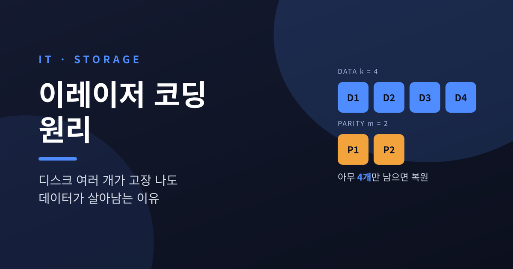
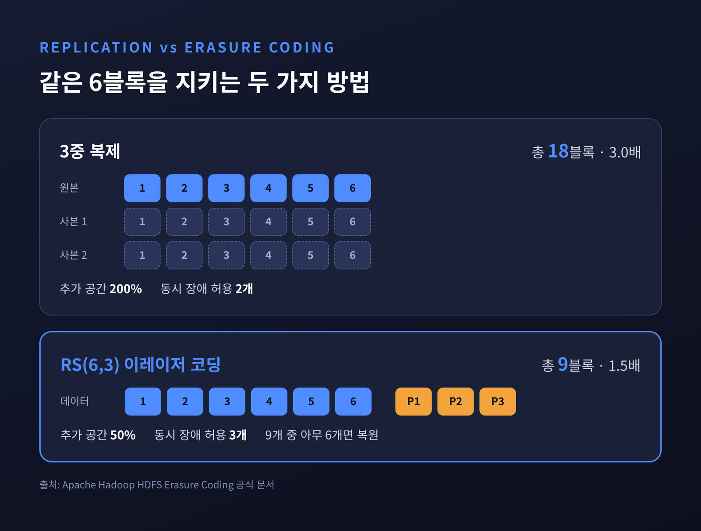
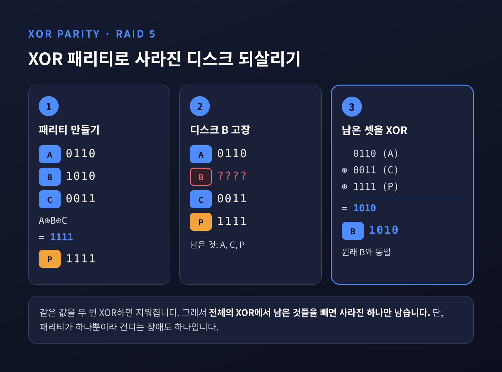
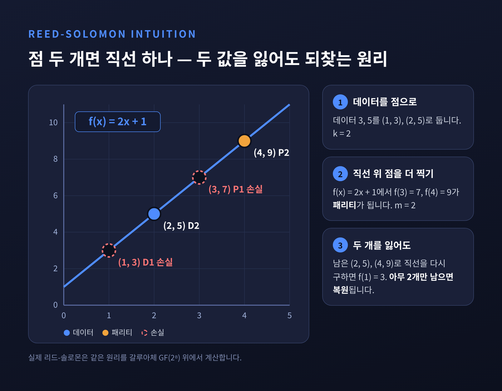
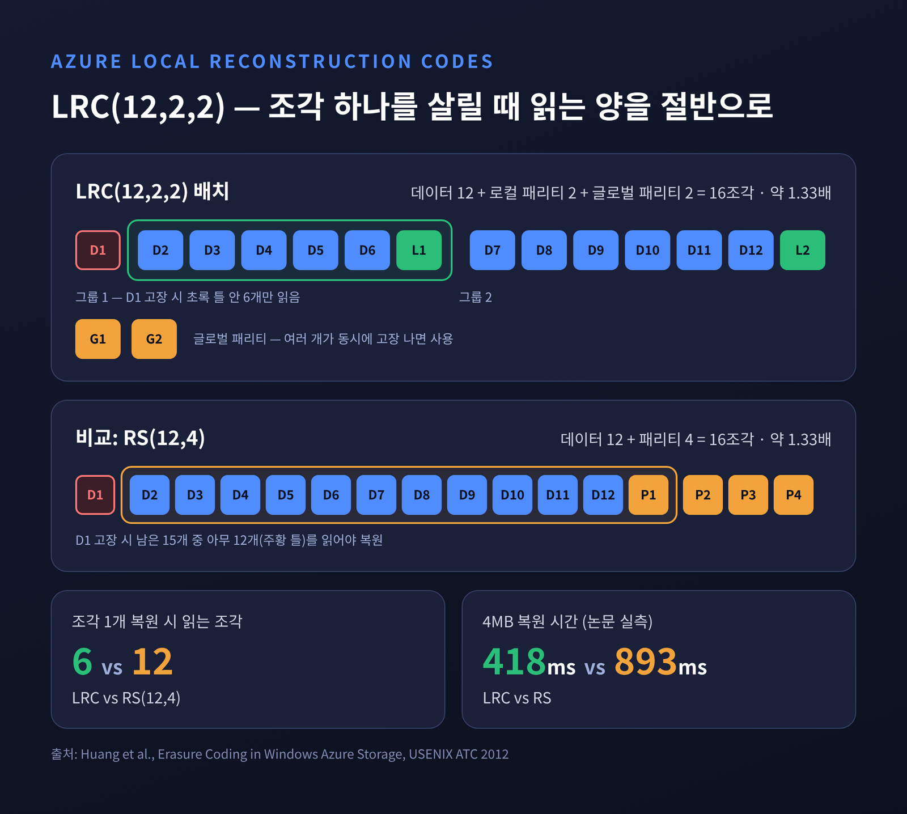
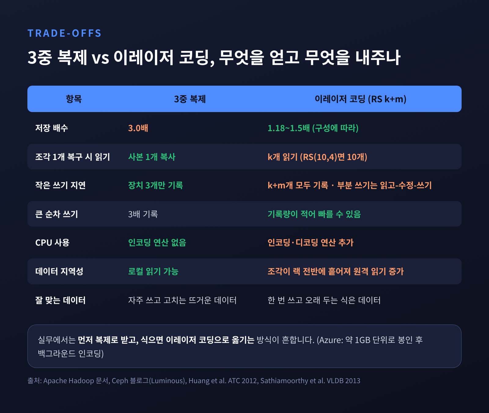

이레이저 코딩 원리 — 디스크 여러 개가 고장 나도 데이터가 살아남는 이유

이번 글에서는 이레이저 코딩(Erasure Coding)이 어떻게 데이터를 지키는지 정리해 보겠습니다. 대형 클라우드와 분산 파일시스템이 왜 단순 복제 대신 이 방식을 택하는지, 그 수학적 뼈대인 리드-솔로몬 부호까지 차근차근 살펴봅니다.
먼저 요점부터 말씀드리겠습니다.
- 이레이저 코딩은 데이터를 k조각으로 나누고 m개의 패리티 조각을 더해, 아무 k개만 남아도 원본을 되살리는 기술입니다.
- 3중 복제는 저장 공간이 3배 들지만, RS(6,3) 같은 방식은 1.5배로 오히려 더 많은 장애(3개)를 견딥니다.
- 대가도 있습니다. 복구할 때 읽어야 할 양이 많고, 작은 쓰기가 느려지며, CPU와 네트워크를 더 씁니다.
■ 복제는 단순하지만 비쌉니다
가장 쉬운 데이터 보호는 똑같은 사본을 여러 벌 두는 것입니다. 하둡 분산 파일시스템(HDFS)의 기본값이 바로 3중 복제입니다.
문제는 비용입니다. 3중 복제는 저장 공간에 200%의 추가 부담을 지웁니다. 6블록짜리 파일 하나가 실제로는 18블록을 차지합니다. 그렇게 해서 얻는 내구성은 "동시에 2개까지 고장 나도 괜찮다"는 수준입니다.
이레이저 코딩은 같은 6블록에 패리티 3블록을 붙입니다. 총 9블록입니다. 아파치 하둡 공식 문서는 이 방식의 저장 오버헤드가 50%를 넘지 않는다고 설명합니다. 그런데 견딜 수 있는 장애는 오히려 3개로 늘어납니다.

Ceph 프로젝트의 설명도 같은 결론입니다. k=4, m=2로 설정하면 데이터 4바이트를 6바이트로 저장하니 1.5배입니다. 3중 복제의 절반 비용이면서 보호 수준은 3중 복제와 비슷합니다. 마이크로소프트 연구진은 이레이저 코딩이 저장 비용을 50% 넘게 줄일 수 있다고 적었습니다.
■ (k, m) 구조 — 숫자 두 개로 읽는 법
이레이저 코딩은 보통 (k, m) 두 숫자로 표기합니다.
- k: 원본을 쪼갠 데이터 조각의 수
- m: 계산으로 만들어 덧붙인 패리티 조각의 수
- 전체 n = k + m, 저장 배수는 (k+m)/k
핵심 약속은 하나입니다. n개 중 어느 k개만 살아 있으면 원본을 완전히 복원합니다. 다시 말해 어떤 조합이든 m개까지 잃어도 됩니다. 이런 최적의 성질을 가진 부호를 MDS(Maximum Distance Separable) 부호라 부르고, 리드-솔로몬이 대표적인 MDS 부호입니다.
자주 보이는 구성을 계산해 보면 이렇습니다.
| 구성 | 저장 배수 | 견디는 장애 수 | 사용 예 |
|---|---|---|---|
| 3중 복제 | 3.0배 | 2개 | HDFS 기본값 |
| RS(6,3) | 1.5배 | 3개 | HDFS 기본 EC 정책 |
| RS(10,4) | 1.4배 | 4개 | HDFS 정책, Facebook |
| RS(12,4) | 약 1.33배 | 4개 | 이론 비교용 |
| 17+3 | 약 1.18배 | 3개 | Backblaze |
k를 키울수록 저장 배수는 1에 가까워집니다. 다만 한 번의 입출력에 관여하는 장치가 늘어 지연이 커진다는 점을 Ceph 문서가 짚고 있습니다. 공짜 점심은 없다는 뜻이고, 이 부분은 뒤에서 다시 다루겠습니다.
■ 가장 단순한 패리티 — XOR와 RAID 5
원리를 이해하는 가장 빠른 길은 XOR(배타적 논리합)입니다. 두 비트가 같으면 0, 다르면 1이 되는 연산입니다.
데이터 디스크 세 개에 다음 값이 있다고 해 보겠습니다.
- A = 0110
- B = 1010
- C = 0011
세 값을 모두 XOR하면 패리티 P가 나옵니다. 0110 ⊕ 1010 = 1100, 여기에 0011을 다시 XOR하면 P = 1111입니다.
이제 B 디스크가 고장 났습니다. 남은 A, C, P를 XOR하면 0110 ⊕ 0011 ⊕ 1111 = 1010. 사라졌던 B가 그대로 돌아옵니다.
XOR는 순서와 묶음에 상관없이 결과가 같고, 같은 값을 두 번 XOR하면 지워집니다. 그래서 "전체의 XOR"에서 살아남은 것들을 빼내면 사라진 하나만 남습니다. RAID 5의 패리티가 정확히 이 방식입니다.

한계도 분명합니다. XOR로 만들 수 있는 패리티는 하나뿐이라, 견디는 장애도 하나입니다. 두 번째 디스크가 복구 도중에 고장 나면 끝입니다. 그래서 RAID 6는 두 번째 패리티 Q를 더하는데, Q는 단순 XOR로는 만들 수 없습니다. 여기서부터 리드-솔로몬이 필요해집니다.
■ 리드-솔로몬 — 점 몇 개로 곡선을 되찾는 원리
리드-솔로몬 부호는 1960년 MIT 링컨연구소의 어빙 리드와 구스타브 솔로몬이 발표했습니다. CD·DVD·블루레이, QR 코드, 보이저 탐사선 통신에도 쓰인 오래된 기술입니다.
직관은 중학교 수학에서 출발합니다. 서로 다른 두 점을 지나는 직선은 단 하나입니다. 세 점이면 2차 곡선 하나, 일반적으로 k개의 점이면 (k−1)차 다항식 하나가 정해집니다.
작은 예로 따라가 보겠습니다. 데이터가 3과 5, 두 개(k=2)라고 하겠습니다.
- 데이터를 점으로 둡니다. (1, 3), (2, 5)
- 두 점을 지나는 직선을 구합니다. f(x) = 2x + 1
- 같은 직선 위의 점을 더 찍습니다. f(3) = 7, f(4) = 9 → 이것이 패리티 2개(m=2)
- 네 값 3, 5, 7, 9를 서로 다른 디스크 네 곳에 저장합니다.
이제 첫째 값 3과 셋째 값 7이 사라졌다고 하겠습니다. 남은 점은 (2, 5)와 (4, 9)입니다. 두 점이면 직선이 다시 정해집니다. 기울기 2, 절편 1. f(1)을 계산하면 잃어버린 3이 돌아옵니다.

어느 두 점이 사라져도 마찬가지입니다. 이것이 "아무 k개만 남으면 된다"는 약속의 정체입니다. 실제 구현에서는 이 계산을 행렬 곱으로 처리합니다. Backblaze의 설명대로, 위쪽 절반이 단위행렬인 코딩 행렬을 데이터에 곱하면 원본은 그대로 두고 패리티만 덧붙습니다. 조각을 잃으면 해당 행을 지운 행렬의 역행렬을 남은 조각에 곱해 되살립니다.
■ 왜 굳이 갈루아체를 쓰는가
위 예시에는 숨은 문제가 있습니다. 보통의 정수로 계산하면 패리티 값이 점점 커집니다. 나눗셈이 끼면 분수도 생깁니다. 1바이트(0~255)에 담아야 할 값이 범위를 벗어나는 순간 저장 장치에서는 쓸 수 없습니다.
해법이 갈루아체(유한체)입니다. GF(2⁸)은 0부터 255까지, 정확히 바이트 하나로 표현되는 값들만으로 이루어진 닫힌 세계입니다. 이 안에서는 덧셈·뺄셈·곱셈·나눗셈을 해도 결과가 늘 0~255 안에 머뭅니다. 그러면서도 "점 k개면 다항식 하나"라는 성질은 그대로 유지됩니다.
반가운 점이 하나 있습니다. 테네시대 제임스 플랭크 교수의 해설에 따르면, 갈루아체의 덧셈은 비트 XOR와 같습니다. 앞에서 본 RAID 5의 XOR가 사실은 리드-솔로몬의 특수한 경우였던 셈입니다. 곱셈은 기약다항식으로 나머지를 취하는 방식이나 로그 테이블로 처리합니다. 플랭크는 디스크 256개까지는 GF(2⁸) 산술로 리드-솔로몬 부호를 정의할 수 있다고 설명합니다.
예전에는 이 곱셈이 비싸다고 여겨졌습니다. 지금은 사정이 다릅니다. 대부분의 시스템에서는 CPU보다 디스크 입출력과 캐시가 더 큰 병목이라고 플랭크는 짚습니다. 인텔 ISA-L 같은 최적화 라이브러리를 쓰면 HDFS의 순수 자바 구현보다 4배 이상 빠르다는 측정도 있습니다.
■ 실제로는 어디에 쓰이고 있을까
HDFS(하둡 3). 기본 정책은 RS-6-3-1024k입니다. 데이터를 1MiB 셀로 잘라 여러 노드에 줄무늬처럼 흩뿌리고, 줄마다 패리티를 계산합니다. RS-3-2, RS-10-4, XOR-2-1 정책도 내장돼 있습니다. RS(6,3)을 쓰려면 DataNode가 최소 9대 필요하고, 랙은 최소 3개·이상적으로 9개 이상을 권장합니다.
Ceph. jerasure 플러그인으로 k와 m을 지정하고, 기본 기법은 반데르몬드 행렬 기반 리드-솔로몬(reed_sol_van)입니다. 기본 장애 도메인이 호스트라, 같은 서버에 조각 두 개가 놓이지 않게 배치합니다.
Microsoft Azure Storage. 여기서 한 단계 진화한 LRC(Local Reconstruction Codes)를 씁니다. 데이터 12조각을 6개씩 두 그룹으로 나누고, 그룹마다 로컬 패리티 1개, 전체에 글로벌 패리티 2개를 둡니다. 총 16조각, 저장 배수는 약 1.33배입니다.

포인트는 복구입니다. 같은 1.33배인 RS(12,4)는 조각 하나를 살리려면 12개를 읽어야 합니다. LRC는 같은 그룹의 6개만 읽으면 됩니다. 논문 실측에서 4MB 복원은 RS 893ms, LRC 418ms였습니다. 이 연구는 2012년 USENIX ATC 최우수 논문상을 받았습니다.
Facebook. 웜(warm) 사진 저장소 f4는 RS(10,4)를 씁니다. 기존 저장소의 실효 복제 계수 3.6을 데이터센터 이중화 시 2.8, 지역 간 XOR 코딩을 더해 2.1까지 낮췄다고 보고됐습니다.
Backblaze. 파일을 17조각으로 나누고 패리티 3조각을 더해, 20개 중 아무 17개로 복원합니다. 2015년에는 자바로 만든 리드-솔로몬 라이브러리를 오픈소스로 공개했습니다.
■ 공짜는 아닙니다 — 복구 비용과 쓰기 지연
예전엔 "디스크가 비싸니 복제를 줄이자"는 논리가 전부였습니다. 지금은 "복구할 때 네트워크가 버티느냐"가 더 중요한 질문이 됐습니다.

복구 트래픽. 복제는 고장 난 블록을 사본 하나에서 복사하면 끝입니다. RS(k,m)은 조각 하나를 살리려고 k개를 읽어야 합니다. Facebook 연구진은 3,000대 넘는 HDFS 클러스터에서 RS(10,4) 복구 트래픽이 전체 네트워크 트래픽의 10~20%에 이를 것으로 추정했습니다. 하루 20건 이상의 노드 장애가 흔한 환경이었습니다. 당시 RS로 인코딩된 데이터는 8%에 그쳤고, 연구진은 그 원인으로 복구 비용을 지목했습니다.
작은 쓰기와 지연. Ceph 블로그는 작은 쓰기가 복제보다 느리다고 설명합니다. 쓰기마다 k+m개 장치를 모두 거쳐야 하고, 줄의 일부만 바꿀 때는 기존 데이터를 읽어 다시 인코딩한 뒤 써야 하기 때문입니다. 반대로 큰 순차 쓰기는 기록량이 적어 복제보다 빠를 수 있습니다.
CPU와 지역성. 인코딩·디코딩은 클라이언트와 서버의 CPU를 추가로 씁니다. 조각이 여러 랙에 흩어지니 읽기 대부분이 랙 밖으로 나갑니다. HDFS 문서가 네트워크 대역폭을 특히 강조하는 이유입니다.
기능 제약. HDFS의 EC 파일은 append와 truncate를 지원하지 않고, hflush·hsync는 아무 동작도 하지 않습니다.
그래서 실무의 답은 대개 "섞어 쓰기"입니다. Azure는 데이터를 일단 3중 복제로 받은 뒤, 약 1GB 단위로 봉인되면 백그라운드에서 인코딩하고 사본을 지웁니다. f4도 사진은 3개월, 다른 데이터는 1개월이 지나 덜 찾게 되면 옮겨 담습니다. 자주 쓰는 데이터는 복제로 빠르게, 식은 데이터는 이레이저 코딩으로 싸게 두는 방식입니다.
정리하면 이렇습니다.
이레이저 코딩은 사본을 늘리는 대신 수학으로 여유분을 만듭니다. XOR 하나로 시작한 아이디어가 다항식 보간과 갈루아체를 만나, 디스크 여러 개가 동시에 사라져도 데이터를 되찾는 기술이 됐습니다. 물론 복구 트래픽과 쓰기 지연이라는 청구서가 따라옵니다. LRC 같은 변형이 계속 나오는 것도 그 청구서를 줄이기 위해서입니다.
"똑같이 세 벌 두는 대신, 조금 더 똑똑하게 한 벌 반을 둔다."
데이터가 어디서 살아남는지 물으신다면, 디스크가 아니라 그 사이의 계산 속에서라고 답하겠습니다.
참고 자료
- Apache Hadoop, HDFS Erasure Coding 공식 문서
- Cloudera, Introduction to HDFS Erasure Coding in Apache Hadoop
- Microsoft Research, A Better Way to Store Data
- Huang et al., Erasure Coding in Windows Azure Storage (USENIX ATC 2012)
- Ceph, Jerasure erasure code plugin
- Ceph Blog, New in Luminous: Erasure Coding for RBD and CephFS
- Sathiamoorthy et al., XORing Elephants: Novel Erasure Codes for Big Data (VLDB 2013)
- Backblaze, Backblaze Open-sources Reed-Solomon Erasure Coding Source Code
- James S. Plank, Erasure Codes for Storage Systems: A Brief Primer (USENIX ;login:)
- Wikipedia, Reed–Solomon error correction
- The Morning Paper, f4: Facebook's warm BLOB storage system